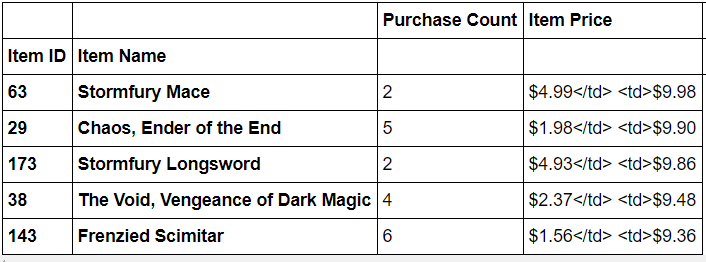

Of the 1163 active players, the vast majority are male (84%). There also exists, a smaller, but notable proportion of female players (14%).
Our peak age demographic falls between 20-24 (44.8%) with secondary groups falling between 15-19 (18.60%) and 25-29 (13.4%).
Most profitable Items.
